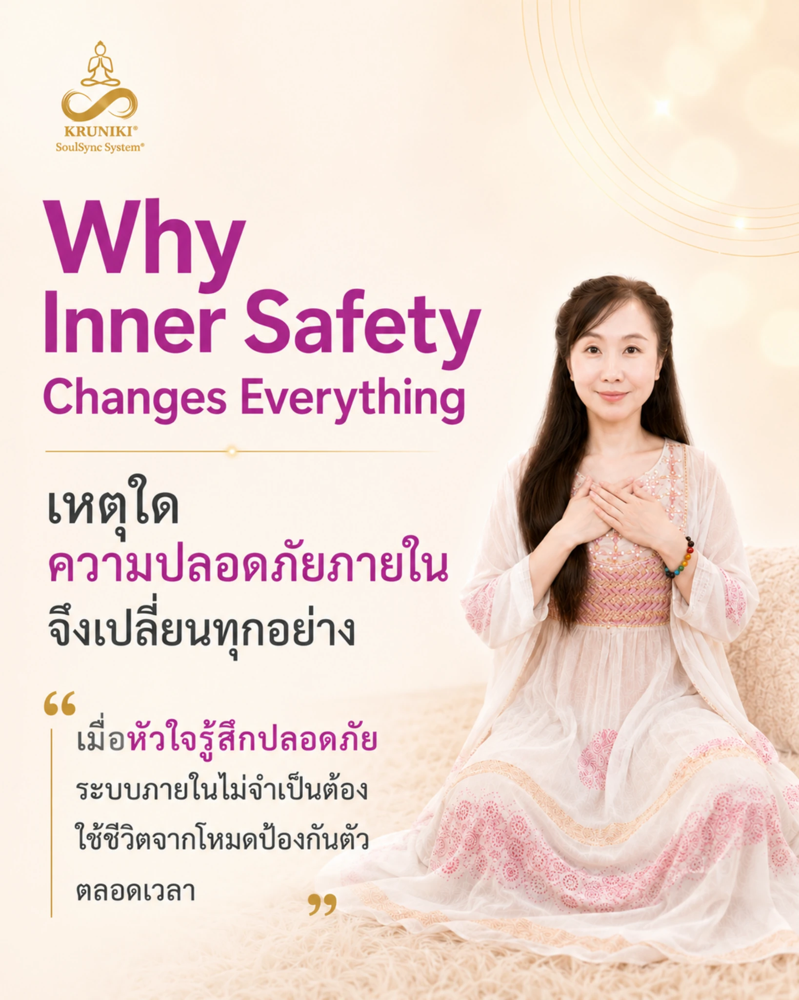
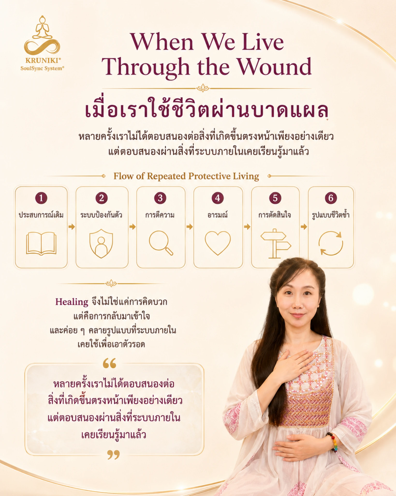
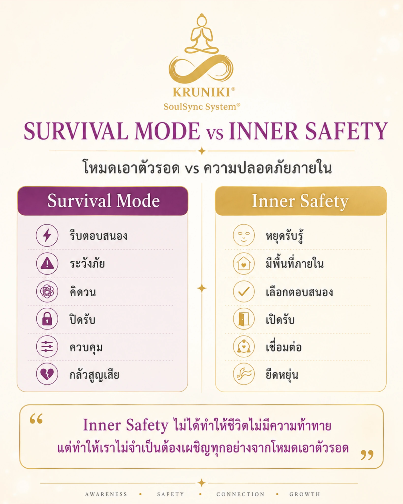
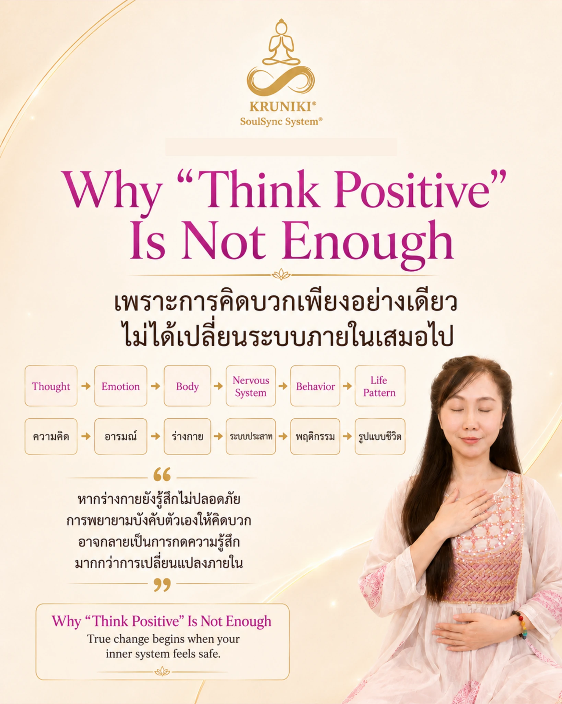
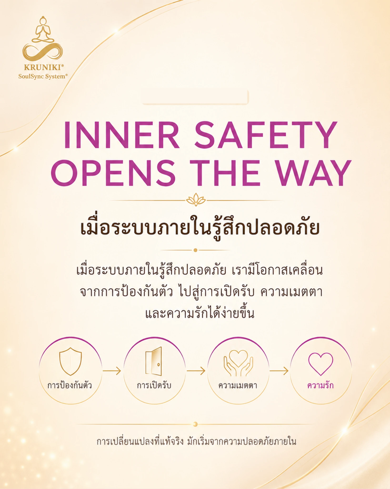

01
Heart
การกลับมารับรู้ความรู้สึก ความต้องการ และความจริงภายใน โดยไม่เร่งให้ตัวเองต้องเป็นอย่างอื่นทันที

เมื่อหัวใจรู้สึกปลอดภัย ระบบภายในไม่จำเป็นต้องใช้ชีวิตจากโหมดป้องกันตัวตลอดเวลา เราจึงมีพื้นที่มากขึ้นสำหรับการรับรู้ การเลือกตอบสนอง และการกลับมาเชื่อมต่อกับตัวเองอย่างแท้จริง
ความปลอดภัยภายในไม่ได้หมายความว่าชีวิตจะไม่มีความท้าทาย แต่หมายถึงการมีพื้นที่ภายในมากพอที่จะรับรู้สิ่งที่เกิดขึ้น โดยไม่จำเป็นต้องตอบสนองทุกอย่างจากความกลัว ความระแวง หรือรูปแบบป้องกันตัวเดิมเสมอไป

หลายครั้งมนุษย์ไม่ได้ตอบสนองต่อสิ่งที่เกิดขึ้นตรงหน้าเพียงอย่างเดียว แต่ตอบสนองผ่านสิ่งที่ระบบภายในเคยเรียนรู้จากประสบการณ์เดิมด้วย
ประสบการณ์ที่ยังสร้างความเจ็บปวด ความกลัว หรือความไม่มั่นคง อาจมีอิทธิพลต่อวิธีที่เราตีความสถานการณ์ รู้สึก ตัดสินใจ และวางรูปแบบความสัมพันธ์ในชีวิตปัจจุบัน

การรีบตอบสนอง การระวังภัย การคิดวน การปิดรับ หรือความพยายามควบคุม อาจเป็นรูปแบบที่เคยช่วยให้เรารับมือกับสิ่งที่รู้สึกไม่ปลอดภัย
เราอาจมีพื้นที่มากขึ้นสำหรับการหยุดรับรู้ เลือกตอบสนอง เปิดรับ เชื่อมต่อ และยืดหยุ่นกับสิ่งที่เกิดขึ้น โดยไม่จำเป็นต้องเผชิญทุกอย่างจากโหมดป้องกันตัว

ความคิดเป็นส่วนหนึ่งของประสบการณ์มนุษย์ แต่สิ่งที่เกิดขึ้นภายในไม่ได้มีเพียงความคิด ยังมีอารมณ์ ความรู้สึกทางกาย การตอบสนองของระบบประสาท พฤติกรรม และรูปแบบชีวิตที่เชื่อมโยงกัน
หากร่างกายและระบบภายในยังรับรู้ถึงความไม่ปลอดภัย การบังคับตัวเองให้คิดบวกอาจกลายเป็นการพยายามกดหรือข้ามความรู้สึก แทนที่จะสร้างความเข้าใจและความสัมพันธ์ที่ปลอดภัยกับสิ่งที่เกิดขึ้นจริงภายใน
เมื่อเราอยู่กับความกลัว ความไม่มั่นคง หรือความเจ็บปวดที่ยังไม่ได้รับการรับฟัง สิ่งเหล่านี้อาจแสดงออกผ่านวิธีพูด การปิดตัว การควบคุม การหลีกเลี่ยง หรือการตอบสนองต่อคนใกล้ตัว
ผลกระทบจึงอาจเกิดขึ้นในความสัมพันธ์กับลูก คู่ชีวิต พ่อแม่ หรือคนที่อยู่ใกล้เรา โดยไม่ได้หมายความว่าใครเป็น “คนผิด” แต่เป็นการมองเห็นว่ารูปแบบภายในของมนุษย์สามารถส่งต่อผ่านความสัมพันธ์ได้
การเยียวยาหัวใจของตัวเองจึงเป็นทั้งการดูแลตัวเรา และเป็นการสร้างความเป็นไปได้ใหม่ให้กับวิธีที่เราอยู่กับคนที่เรารัก
การกลับมารับรู้ความรู้สึก ความต้องการ และความจริงภายใน โดยไม่เร่งให้ตัวเองต้องเป็นอย่างอื่นทันที
ความสงบนิ่งช่วยสร้างพื้นที่ระหว่างสิ่งที่เกิดขึ้นกับการตอบสนอง เพื่อให้เรามองเห็นตัวเองได้ชัดขึ้น
การเยียวยาภายในคือกระบวนการเรียนรู้ รับฟัง และดูแลสิ่งที่เกิดขึ้นภายใน อย่างเป็นลำดับและสอดคล้องกับจังหวะของแต่ละคน

เมื่อเราไม่ต้องใช้พลังทั้งหมดไปกับการป้องกันตัว พื้นที่ภายในสามารถเปิดสู่การรับรู้ ความเมตตา การเชื่อมต่อ และการเลือกวิธีตอบสนองที่สอดคล้องกับชีวิตที่เราต้องการสร้างมากขึ้น
Self-Healing ไม่ใช่การซ่อมตัวเอง แต่คือการกลับมาเรียนรู้ รับฟัง และดูแลภายในอย่างเป็นระบบ
คุณไม่จำเป็นต้องเริ่มจากการเปลี่ยนทุกอย่างพร้อมกัน เลือกจุดเริ่มต้นที่สอดคล้องกับสิ่งที่คุณต้องการดูแลในเวลานี้
จุดเริ่มต้นสำหรับการกลับมาเชื่อมต่อหัวใจ รับฟังสิ่งที่เกิดขึ้นภายใน และมองเห็นสิ่งที่ต้องการการดูแลอย่างชัดเจนขึ้น
ดูรายละเอียดเซสชัน →Self-Healing ขั้นพื้นฐานของ KRUNIKI®
เส้นทาง 90 วันสำหรับการดูแลหัวใจ ฝึกความสงบนิ่ง และวางรากฐานการเยียวยาภายในอย่างต่อเนื่องในชีวิตจริง
ดูรายละเอียดโปรแกรม →เนื้อหาในหน้านี้จัดทำขึ้นเพื่อการเรียนรู้และการสะท้อนตนเอง ไม่ใช่การวินิจฉัย ไม่ใช่การรักษาทางการแพทย์หรือจิตบำบัด และไม่ทดแทนการดูแลจากแพทย์ นักจิตวิทยา หรือผู้เชี่ยวชาญด้านสุขภาพจิตที่มีคุณสมบัติเหมาะสม
หากต้องการสอบถามเกี่ยวกับ Heart Awakening หรือ The Heart Field Activation™ สามารถเริ่มต้นพูดคุยผ่าน LINE OA ได้